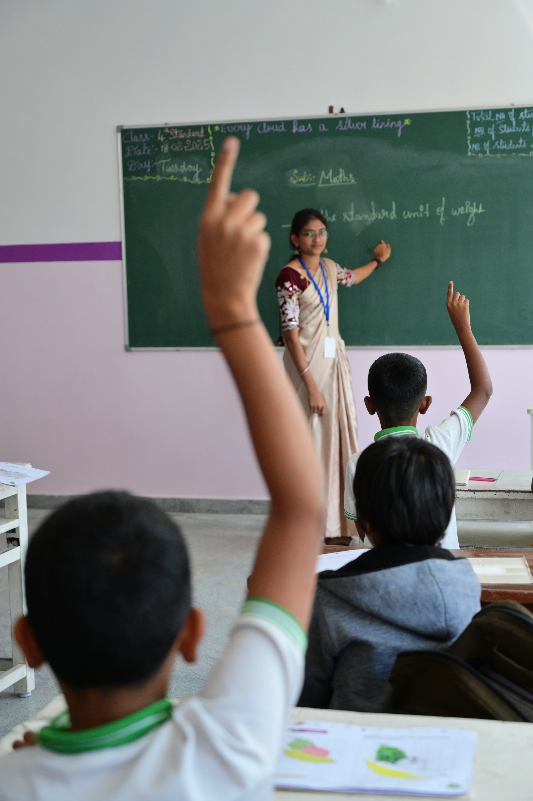
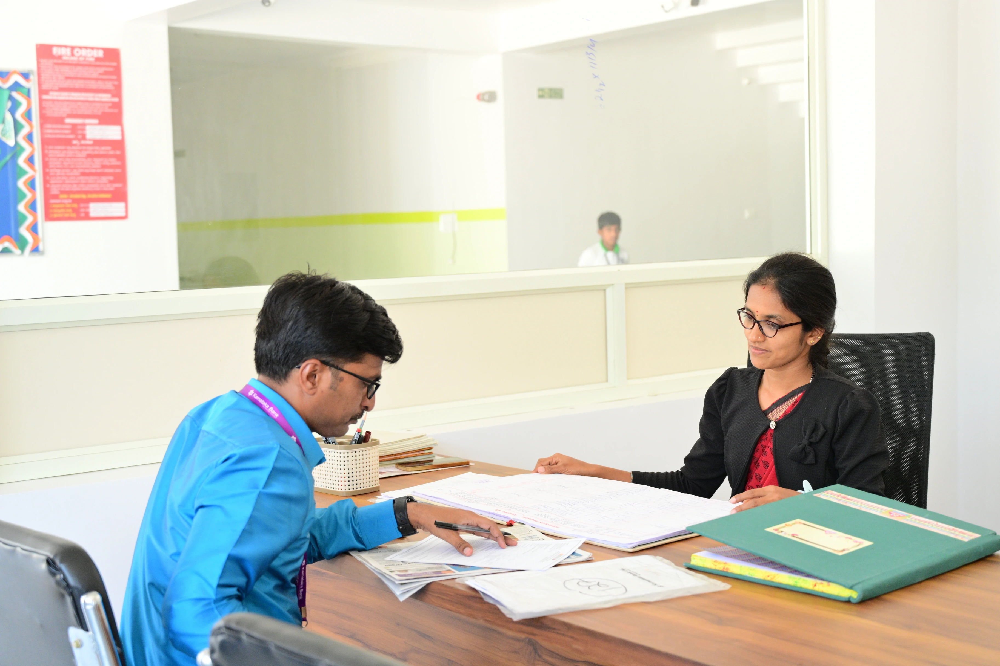
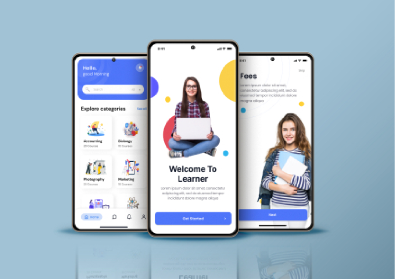
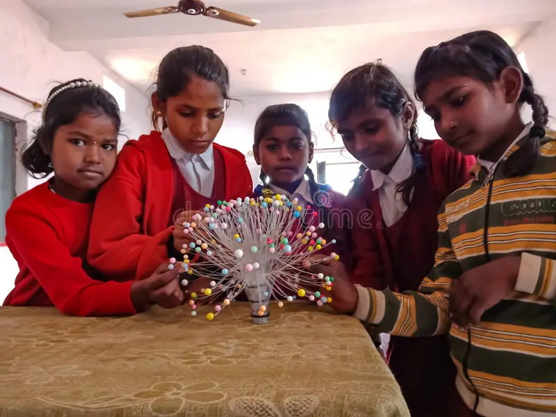
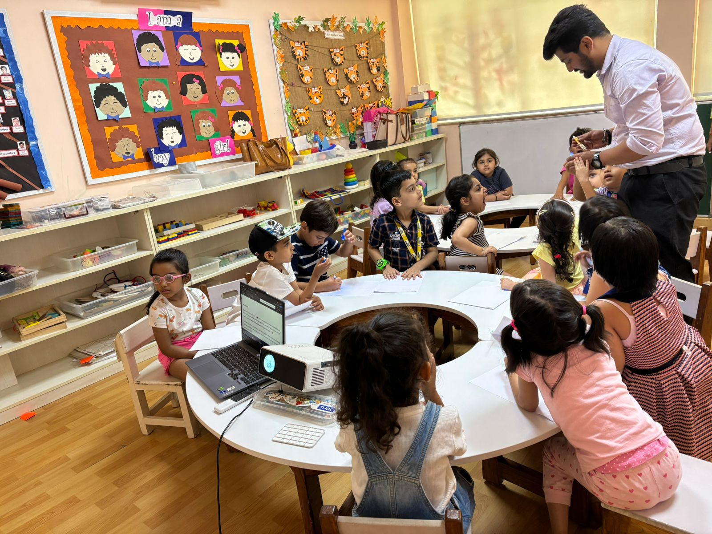
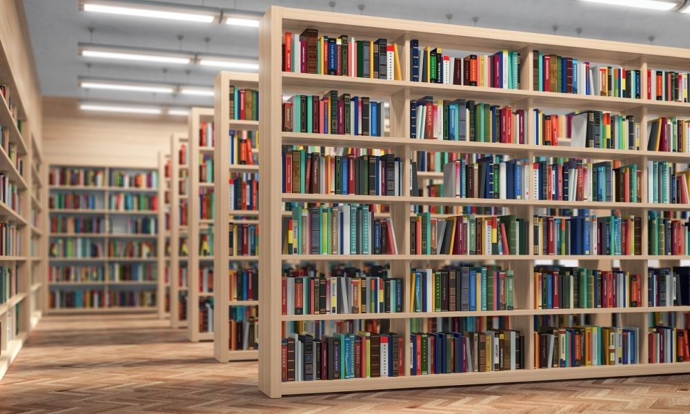
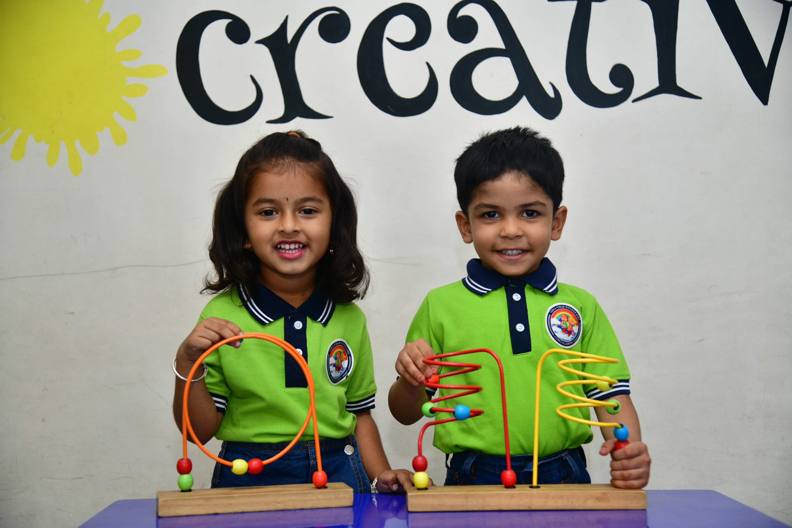
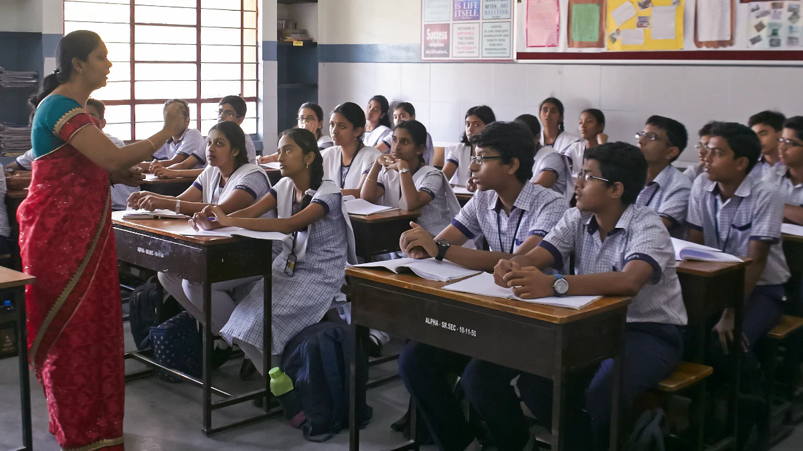
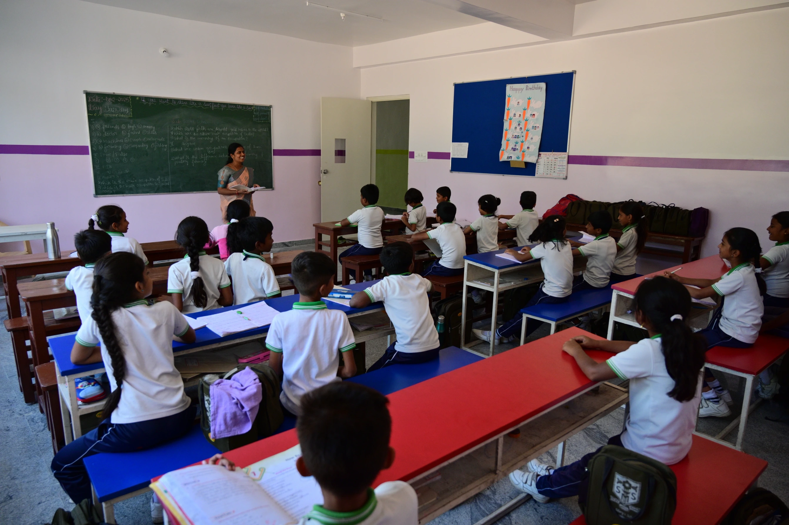
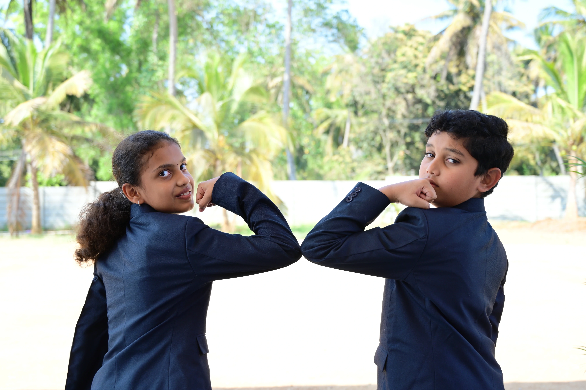

Technology-Enabled Classrooms and Labs

Vidya Vihar International School (VVIS) ensures that every
classroom, from Preschool to Sr. Secondary, has interactive
digital display boards. These boards create a multi-sensory
learning environment that enhances the learning experience for
students and helps teachers maximize the benefits of technology.
High-speed Wi-Fi internet service is available across the campus,
which is advantageous for both educators and students as it allows
for easy access to online resources. Our students are encouraged
to use digital tools for research, presentations, and
collaborative projects, which enhance their digital literacy
skills. These efforts align with NEP 2020’s emphasis on
technological integration, ensuring our students are well-prepared
for the technological demands of the modern world. The
availability of in house Learning Management System (LMS) and a
rich repository of resources ensures optimal use of these
facilities.


Learning Management Systems (LMS)

VVIS employs a comprehensive Learning Management System that acts
as a central hub for all educational activities. Personalized
accounts for students, teachers, and parents provide access to
course materials, assignments, quizzes, and question banks. The
LMS supports collaborative learning through discussion forums,
learning polls, and online assessments. Additionally, the system
includes tools for lesson planning, evaluation systems, portfolio
and performance tracking, lab solutions, digital resources, and
interactive digital books, ensuring a holistic and integrated
educational experience.


School Information Management System (SIMS)

The school’s administrative and operational tasks are streamlined
through a unified system-integrated management platform. This
platform handles a range of tasks, including attendance tracking,
resource allocation, student and staff management, and financial
transactions. By integrating these functions into a single system,
the platform facilitates efficient school administration, reducing
the workload on staff and ensuring smooth operations.

School Mobile App

To enhance communication and engagement, VVIS has developed a
dedicated mobile app. This app provides access to essential
information such as school announcements, notifications, event
calendars, academic resources, and details about extracurricular
activities. Parents can use the app to stay updated on their
child’s progress and upcoming events, ensuring they remain
informed and engaged with their child’s education.


Innovation Centre

The heart of our STEAM initiative is the ‘INNOVATION CENTRE’, a
7,000 sq. ft. state-of-the-art facility designed to inspire
creativity, critical thinking, and problem-solving. This
well-equipped space provides students access to advanced tools and
technologies, enabling them to engage in hands-on learning
experiences.
In the Innovation Lab, students work on multifaceted challenges and projects that require them to think critically, research solutions, and perform meaningful tasks. Mentors and teachers design these projects to present students with authentic, real-world issues. Through this process, students are encouraged to inquire, take risks, share their ideas, and push the boundaries of their performance. This experiential learning approach helps them develop resilience and adaptability, preparing them for future academic and professional endeavours. Students can create tangible objects from digital designs using 3D Printers. This hands-on approach helps reinforce complex concepts and enhances their understanding of abstract topics across different subjects. The Innovation Centre is equipped with Ender 3, Firepen, slicing software, and drafting software like Tremble Sketchup and Tinkercad, providing students with advanced tools to bring their designs to life.
In the Innovation Lab, students work on multifaceted challenges and projects that require them to think critically, research solutions, and perform meaningful tasks. Mentors and teachers design these projects to present students with authentic, real-world issues. Through this process, students are encouraged to inquire, take risks, share their ideas, and push the boundaries of their performance. This experiential learning approach helps them develop resilience and adaptability, preparing them for future academic and professional endeavours. Students can create tangible objects from digital designs using 3D Printers. This hands-on approach helps reinforce complex concepts and enhances their understanding of abstract topics across different subjects. The Innovation Centre is equipped with Ender 3, Firepen, slicing software, and drafting software like Tremble Sketchup and Tinkercad, providing students with advanced tools to bring their designs to life.


Centre of Excellence (CoE)

To establish a benchmark of best practices in the areas of
Artificial Intelligence (AI), Internet of Things (IoT), and
Robotics, VVIS has set up a Centre of Excellence, in partnership
with Factory Mind, a Norwegian company. The CoE is expected to
create a mature and collaborative IoT ecosystem with the help of
research scholars and professionals who would work with our
teachers and students to develop extensive knowledge of future
technologies.


Library

Books have a profound and enduring impact on our lives, shaping
our minds and imaginations. Our carefully curated reading room
offers a treasure trove of engaging, age-appropriate literature
designed to captivate young learners. Through guided reading
sessions and other stimulating activities, we introduce our
children to the magical world of books, nurturing a lifelong love
of reading. This nurturing space provides a haven for exploration
and discovery, where children can embark on exciting adventures,
meet fascinating characters, and expand their understanding of the
world.
The school has two Library-cum-Reading Rooms stocked with a wide selection of reading materials, reference books, and manuals for students and teachers. Additionally, there is a large collection of videos, e-books, and other digital resources, classified and catalogued by age group and subject area. This extensive collection of digital and print resources enriches the knowledge base available to the school community.
The school has two Library-cum-Reading Rooms stocked with a wide selection of reading materials, reference books, and manuals for students and teachers. Additionally, there is a large collection of videos, e-books, and other digital resources, classified and catalogued by age group and subject area. This extensive collection of digital and print resources enriches the knowledge base available to the school community.


Resource Room

Our resource room at Vidya Vihar International School is a
treasure trove of educational resources. The school supports
students, with diverse learning needs. This room provides
specialized, individualised instruction and assistance tailored to
each student’s strengths and challenges. The school provides
remedial teaching, and personalised support to build strong
foundational skills and academic and social-emotional development.
The room is staffed by trained educators who collaborate closely
with classroom teachers to adapt and modify curriculum content,
instructional methods, and assessments, ensuring a more inclusive
learning environment. Additionally, the Resource Room offers tools
and resources to enhance students’ engagement and independence,
helping them achieve their full potential within the mainstream
classroom setting. Filled with worksheets, textbooks,
developmental books, and more, the Resource Rooms provide students
with a wealth of materials to support their learning. Whether
you’re looking for extra practice, enrichment activities, or
research materials, our resource room has something to offer
everyone.


Language Lab (Foundational Stage)
Our language lab at Vidya Vihar International School is a modern
and well-equipped facility designed to foster language learning.
Students can practice Hindi, Kannada, and English through a
variety of interactive activities, including listening, speaking,
reading, and writing exercises. With state-of-the-art technology
and a focus on personalized learning, our lab provides a
stimulating environment for students to develop their language
skills and appreciate the rich linguistic heritage of India.


Creative Corner (Foundational Stage)

Children’s creativity and imagination soar as they delve into the
world of art, exploring a diverse range of materials. From the
tactile experience of moulding clay to the vibrant hues of paints
and the expressive strokes of crayons, children are encouraged to
think outside the box and discover their unique artistic voices.
By incorporating natural elements into their creations, they
connect with the world around them and develop a deeper
appreciation for the beauty and diversity of nature. As they
experiment with different materials and techniques, they learn to
overcome challenges, embrace their individuality, and develop a
sense of confidence in their abilities.


ICT Labs

Our ICT (Information and Communication Technology) Labs at Vidya
Vihar International School is a state-of-the-art facility equipped
with the latest technology to provide students with a stimulating
and engaging learning environment. VVIS is equipped with three ICT
labs, housing 90 cutting-edge computer systems with the latest
versions of software. The labs also include a set of 30 laptops
with graphic cards, allowing students to work on various projects
and activities. These resources enable students to execute complex
programs, including animation, web design, programming languages,
3D design and printing, and more.


Physics Lab

Physics Lab provides an ideal environment for students to explore
the fundamental principles of physics through hands-on
experimentation. Equipped with modern apparatus, students conduct
experiments to delve into the intricacies of physics. From
studying the laws of motion to investigating the properties of
light and electricity, including mechanics, optics,
thermodynamics, and electromagnetism our lab provides a hands-on
approach to learning. The lab also features advanced experimental
setups for studying topics like electric circuits, magnetic
fields, and wave motion, allowing students to engage in real-world
problem-solving and deeper inquiry into the laws of physics.
Additionally, data-logging tools, Vernier probes, and computer-aided simulations help students visualize abstract concepts and analyse experimental data with precision. Focusing on exploratory and project-based learning, the lab encourages students to conduct experiments, design projects, and apply theoretical knowledge to practical situations. It provides a fun and stimulating environment where students develop a solid understanding of physics while honing critical thinking and problem-solving skills.
Additionally, data-logging tools, Vernier probes, and computer-aided simulations help students visualize abstract concepts and analyse experimental data with precision. Focusing on exploratory and project-based learning, the lab encourages students to conduct experiments, design projects, and apply theoretical knowledge to practical situations. It provides a fun and stimulating environment where students develop a solid understanding of physics while honing critical thinking and problem-solving skills.


Chemistry Lab

The Chemistry Lab is a dynamic space where students delve into the
fascinating world of chemicals and substances and transform their
curiosity into tangible experiments, exploring the properties of
matter and creating new things. Students engage in experiments
that investigate reaction rates, construct electrochemical cells,
and measure their potential. Equipped with state-of-the-art
instruments like pH meters, conductometers, potentiometers,
high-precision balances, magnetic stirrers, hot air ovens, and
centrifuges. Our lab provides a hands-on learning environment with
precision and safety. The lab offers a wide range of chemical
reagents, glassware, and modern equipment, enabling students to
conduct experiments in organic, inorganic, and physical chemistry.
Additionally, the introduction of nanotechnology gives students hands-on experience with the manipulation of matter at the molecular and atomic scale, exposing them to the latest developments in material science and cutting-edge research. With a focus on inquiry-based learning, students are encouraged to conduct experiments, explore chemical reactions, and understand the real-world applications of chemistry.
Additionally, the introduction of nanotechnology gives students hands-on experience with the manipulation of matter at the molecular and atomic scale, exposing them to the latest developments in material science and cutting-edge research. With a focus on inquiry-based learning, students are encouraged to conduct experiments, explore chemical reactions, and understand the real-world applications of chemistry.


Biology Lab

The Biology Lab offers an immersive, hands-on learning experience
where students explore the wonders of life sciences. Equipped with
advanced digital microscopes, our biology lab is a vibrant space
where students explore the intricacies of life and engage in
hands-on experiments that bring theoretical concepts to life and
develop a deeper appreciation for the natural world. Students have
access to a wide range of biological models, specimens, and
dissection tools, allowing them to engage in practical experiments
and deepen their understanding of anatomy, physiology, and
ecology. The lab also features incubators, centrifuges, water
baths, UV transilluminators, and DNA analysis kits, allowing
students to conduct advanced biological experiments in genetics,
microbiology, and biotechnology.
The digital microscope is a special feature of the Biology Lab. This microscope can be connected to a computer system through a cable interface. All-in-one, touch-enabled computers are connected to these digital microscopes. Students can view the objects from the viewfinder or watch them on the computer screen. As these are touchscreen computers, students can directly zoom in to get the desired information about the object on the screen.
The digital microscope is a special feature of the Biology Lab. This microscope can be connected to a computer system through a cable interface. All-in-one, touch-enabled computers are connected to these digital microscopes. Students can view the objects from the viewfinder or watch them on the computer screen. As these are touchscreen computers, students can directly zoom in to get the desired information about the object on the screen.


Math Lab

The Math Lab provides an engaging and hands-on learning
environment, designed to make math both fun and intuitive.
Students can explore concepts visually and interactively using
high-end infrastructure such as interactive smart boards and
advanced mathematical software. Math lab offers a variety of
manipulatives such as geometric models, algebra tiles, abacus, and
graphing kits that allow for practical exploration of mathematical
principles. Through activities like game-based learning, group
problem-solving, and inquiry-based tasks, students develop a
deeper understanding of topics like geometry, algebra, and
probability.
The Math lab enhances student engagement by incorporating classroom kits designed to make mathematical concepts tangible and interactive. These kits include a wide range of tools and manipulatives that cater to different learning styles, allowing students to explore math concepts in a hands-on, practical manner. Our lab fosters creativity and curiosity, helping students connect math to real-world applications while promoting a love for learning through fun and interactive experiences.
The Math lab enhances student engagement by incorporating classroom kits designed to make mathematical concepts tangible and interactive. These kits include a wide range of tools and manipulatives that cater to different learning styles, allowing students to explore math concepts in a hands-on, practical manner. Our lab fosters creativity and curiosity, helping students connect math to real-world applications while promoting a love for learning through fun and interactive experiences.

Astronomical Observatory

Vidya Vihar International School has acquired two telescopes: 14”
and 8’’ Computerized Observatory Class Telescopes— Celestron CGE
Pro 1400XLT—Schmidt Cassegrain German Equatorial Mount. These
powerful instruments offer students the opportunity to explore the
cosmos firsthand. To complement the hands-on learning experience,
our Astronomy Lab features interactive activities and immersive
software. Celestia allows students to virtually journey through
multiple universes, while Stellarium provides a realistic
simulation of the night sky. This comprehensive approach ensures
that students gain a deep understanding of astronomy and develop a
lifelong passion for space exploration. Students and the general
public can routinely attend skywatch activities, which offer a
special chance to learn about the universe. Being a recognised
Space Tutor institute, affiliated to ISRO, the Astronomical
Observatory at VVIS has unlimited access to resources in various
forms.


Amphitheatre

Children’s creativity and imagination soar as they delve into the
world of art, exploring a diverse range of materials. From the
tactile experience of moulding clay to the vibrant hues of paints
and the expressive strokes of crayons, children are encouraged to
think outside the box and discover their unique artistic voices.
By incorporating natural elements into their creations, they
connect with the world around them and develop a deeper
appreciation for the beauty and diversity of nature. As they
experiment with different materials and techniques, they learn to
overcome challenges, embrace their individuality, and develop a
sense of confidence in their abilities.


Auditorium
Multidisciplinary activities are brought to life in our
auditorium. With its cutting-edge technology and adaptable seating
configuration, it can host a variety of events, including
conferences, concerts, and lectures as well as workshops. This
warm environment encourages teamwork, creativity, and a lively
community of scholars and intellectuals.

Seminar Hall

Our seminar hall is a versatile space, ideal for a variety of
events. Equipped with modern technology and comfortable seating,
it offers a conducive environment for academic lectures, corporate
meetings, and social gatherings. Whether you’re hosting a small
workshop or a large conference, our seminar hall is the perfect
venue.


Indoor and Outdoor Activities

Embracing the ‘Healthy Mind, Healthy Body’ philosophy, we
prioritize physical activity for our students. To foster all-round
development, we encourage participation in a variety of sports,
including throw ball, basketball, volleyball, hockey, cricket,
badminton, table tennis, various board games and track & field.
Our students are enthusiastic and well prepared to compete in
inter-school athletic competitions at local, state and national
levels. Needless to add, the school has produced accomplished
sports and games achievers, at national and international levels,
in a short span of our existence.


Doll House (Foundational Stage)

A dollhouse is more than just a toy; it’s a portal to a world of
imagination and creativity. Through imaginative play, children can
explore their own emotions, express their feelings, and develop a
deeper understanding of the world around them. As children engage
in imaginative play, they develop a sense of self, build
confidence, and learn to navigate social situations with greater
ease. The dollhouse becomes a safe space for exploration and
expression, providing a foundation for lifelong learning and
growth.


Pavilion (Foundational Stage)
Our spacious and aesthetically designed pavilion serves as a
dynamic hub where we showcase our diverse learning experiences,
extracurricular activities, and sporting events. It’s a place
where students can engage in guided and free physical activities,
fostering a sense of community and belonging. The pavilion is more
than just a building; it’s a space where memories are made and
passions are ignited. Whether it’s a lively dance performance, a
thought-provoking presentation, or a thrilling sporting event, the
pavilion provides a platform for students to shine and showcase
their talents.


Music and Dance Rooms

Music is more than just entertainment; it’s a powerful tool for
developing language skills and cognitive abilities. Beyond
language development, music can also foster emotional
intelligence, creativity, and a sense of self-expression.
Dance is a dynamic form of exercise that promotes both physical and emotional well-being. Students develop body control, spatial awareness, and listening skills as they learn to interpret music and translate it into expressive movements. Through dance, individuals can enhance their coordination, flexibility, and strength while also fostering a sense of rhythm and timing.
Separate rooms for music and dance offer dedicated space designed for students to engage in creative expression through music and dance. These rooms have ample space for movement to facilitate practice and rehearsals. Music and Dance rooms are often used for individual practice, group lessons, rehearsals, and performances, under the guidance and supervision of qualified and experienced professionals.
Dance is a dynamic form of exercise that promotes both physical and emotional well-being. Students develop body control, spatial awareness, and listening skills as they learn to interpret music and translate it into expressive movements. Through dance, individuals can enhance their coordination, flexibility, and strength while also fostering a sense of rhythm and timing.
Separate rooms for music and dance offer dedicated space designed for students to engage in creative expression through music and dance. These rooms have ample space for movement to facilitate practice and rehearsals. Music and Dance rooms are often used for individual practice, group lessons, rehearsals, and performances, under the guidance and supervision of qualified and experienced professionals.


Cafeteria

We recognize the crucial role of nutrition in supporting
children’s growth and development. We provide wholesome and
hygienically prepared vegetarian meals to ensure our children get
the nutrition they need. These meals are designed to provide a
balanced diet that supports their physical and cognitive
development. Beyond the nutritional benefits, our dining program
fosters social skills and helps children develop positive habits.
However, this is an optional facility.


Transport

Vidya Vihar International School offers reliable and safe
transportation services for our students, who wish to opt for the
same. Our well-maintained fleet of buses, experienced drivers, and
robust safety measures ensure a comfortable and secure journey to
and from school.
Children are accompanied by an attendant during their trips to and from the school.
As per law, every bus has been fitted with speed governors, GPS units and CCTV cameras.
Parents receive an SMS alert every time the bus leaves the school for pickup or drop of the children and the School Bus App. provides access to the real time location of their ward’s bus, for added safety.
Children are accompanied by an attendant during their trips to and from the school.
As per law, every bus has been fitted with speed governors, GPS units and CCTV cameras.
Parents receive an SMS alert every time the bus leaves the school for pickup or drop of the children and the School Bus App. provides access to the real time location of their ward’s bus, for added safety.


Infirmary

Our school infirmary is a dedicated space equipped with essential
medical facilities to provide timely care and support to our
students. Staffed by qualified para medical professionals, our
infirmary offers services, including first aid treatment,
medication management during emergencies, health education, and
emotional support. We are committed to ensuring the well-being of
our students and providing a safe and supportive learning
environment.